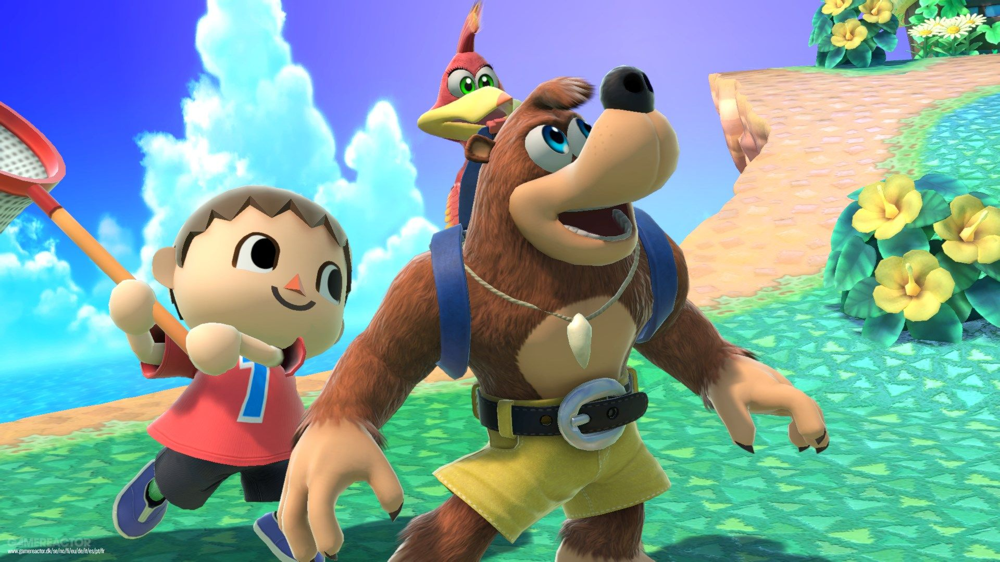
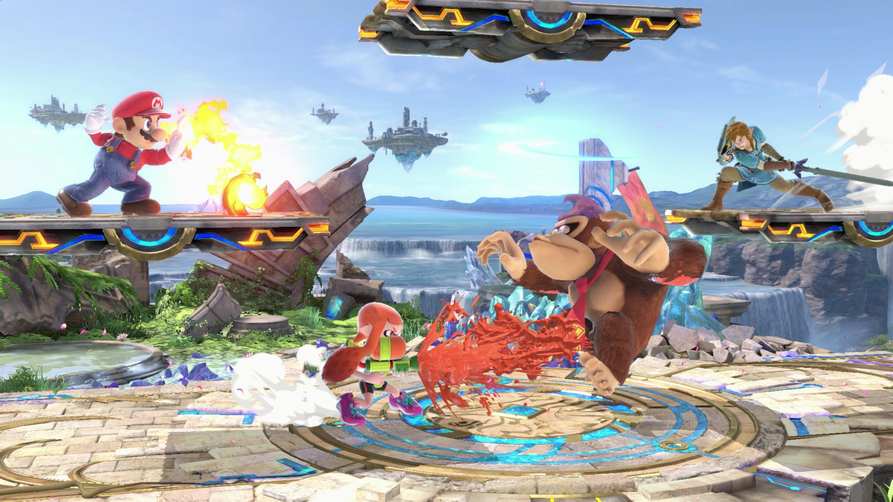

Super Smash Bros Ultimate
Novos personagens e cenários se unem ao elenco completo!
Personagens icônicos se enfrentam na luta definitiva, que você poderá jogar a qualquer hora, em qualquer lugar! Derrote seus rivais com os novos personagens Simon Belmont e King K. Rool, que juntam-se a Inkling, Ridley e todos os outros lutadores na história da série Super Smash Bros. Aproveite a velocidade e o combate melhorados e lute em novos cenários baseados na série Castlevania, Super Mario Odyssey e muito mais!
Não sabe qual cenário escolher? Então selecione a opção Stage Morph para transformar um cenário em outro durante a luta – uma novidade na série! Além disso os clones Dark Samus, Richter Belmont e Chrom se juntam à batalha. Jogando no modo local ou online, desfrute um combate mais rápido, novos ataques e novas opções de defesa, como um escudo perfeito. Deleite-se com mais de 900 composições musicais, lute contra um amigo no modo 1 contra 1, promova jogos de quatro jogadores, aumente a diversão em batalhas com até oito jogadores e muito mais! Detone seus controles do console GameCube – competições lendárias lhe esperam – ou jogue a qualquer hora, em qualquer lugar!
O jogo dos jogos

Os números impressionam. São 74 personagens (sem contar os echo fighters), 108 cenários e 1.300 espíritos que são personagens de diversas franquias que preenchem o game com conteúdo da história dos videogames. Personagens até que eu mesmo não conhecia ou não lembrava que são usados para dar uma força no modo história, o World of Light. O game ainda permite configurar as batalhas para agradar a todo o tipo de jogador. Quer jogar com muitos itens e mandar todo mundo pra fora? Pode. Quer fazer uma luta mais justa baseada em habilidade no melhor 1 contra 1, sem itens? Também pode. Quer ficar destroçando hordas de inimigos? Vai que é tua.
O game de luta mais completo o possível!
O game é o mais abrangente de todos dos mais de 19 anos de existência da franquia em termos de modos de jogo. E os combates? Eles continuam incríveis. Sempre achei interessante usar apenas dois botões e ter uma gama complexa de golpes e de habilidades. O objetivo continua sendo mandar os adversários para fora da tela e, para tal, você precisa bater no inimigo para aumentar a porcentagem de sua vida. Quanto maior a porcentagem, mais longe ele vai ao ser atingido, até eventualmente sair da tela. Tanto no ataque quanto no uso do especial, você tem 4 variedades de golpes dependendo para onde posicionar o direcional. Você ainda pode se defender, desviar e agarrar os inimigos para bater mais neles ou jogá-los longe. Parece bem simples e é, mas o bom jogador sabe o tempo de cada golpe de cada um dos personagens e o momento certo de usá-los para vencer.
Super Smash Bros. Ultimate pode não ser o mais original dos jogos da franquia, mas isso é compensado pela quantidade abissal de conteúdo. Todos os personagens lançados desde o Nintendo 64 estão aqui com um visual ainda mais refinado do que na versão de Wii U e tudo muito mais balanceado. É gostoso ficar batalhando tanto no tradicional 1 contra 1 quanto com 8 personagens na tela usando todo o tipo de itens. É um caos controlado que permite que jogadores de todas as idades e níveis de habilidade possam se divertir e até vencer.
Todo mundo está aqui
O modo história World of Light é completo e longo para habilitar novos personagens. Você anda pelo mapa realizando desafios, montando sua equipe de personagens e evoluindo na mecânica de espíritos. Eles dão habilidades para os personagens que vão ajudar nos desafios. A força do vento, em determinada batalha, é capaz de jogar o lutador para fora da arena? Então use um espírito que ajuda você a ficar preso no chão, por exemplo. São 1.300 no total e todos de jogos de franquias presentes em Ultimate. Você pode evolui-los com snacks e outros itens para deixá-los mais fortes. E vale lembrar que o game avisa você caso seu espírito esteja fraco para a luta.
Já o modo clássico traz desafios temáticos baseados no personagem escolhido. No caso de Ryu, por exemplo, você vai enfrentar inimigos, inclusive Ken, igual em Street Fighter: nesse caso, a porcentagem é a vida e precisa chegar a zero para que você vença. No caso de escolher o Treinador Pokémon, você enfrenta Lucario, Greninja e Mewtwo no final. E o último chefe também é um grande desafio pois ele tem uma vida enorme e é muito poderoso. E é bom que você treine bem antes de jogar: perder aqui reduz a pontuação e você recebe menos bônus.
Dentre os muitos modos de jogo, temos os Squad Strike, em que você seleciona três personagens para entrar na batalha conforme acontecem as eliminações. Pode acreditar, vai ter algo que vai cativar você em Ultimate.
Screenshots de Super Smash Bros Ultimate
Super Smash Bros Ultimate já está disponível para Nintendo Switch.